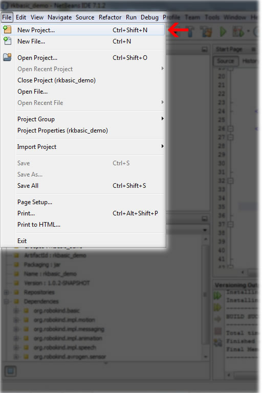
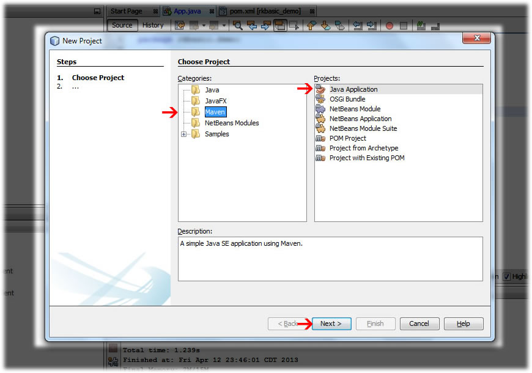

This document assumes basic Java programming competence. Look to the javadocs for the MechIO Basic API for more information and a complete list of classes and methods. The following details how to get started using the API for the first time and covers version requirements, creating a Maven project, and sending commands to a robot or avatar. A demo project demonstraiting the use of basic API and intended to be compatible with RoboKind's R25 robot and avatar can be found here.
The MechIO Basic API uses the Maven build tool and Java 7. You can download a package containing Netbeans with the Maven plugin and JDK 7 directly from Oracle.
Creating a New Project
To create a new project, start by clicking on the 'File' menu and selecting 'New Project' (Ctrl+Shift+N)

Select 'Maven' in 'Categories' and 'Java Application' in 'Projects' then select 'Next'
Fill in the Name and Location as you normally would (note there and suggestions in the Maven Standard though) and select 'Ok'

A Maven project will automatically contain a pom.xml in the 'Project Files'. This file is an XML representation of the project. It contains all the necessary information about the project and the configurations of the plugins. Include your dependencies here. With all the necessary dependencies in the pom.xml, you will never have to manually add 'imports'. After making your 'main' class, press Ctrl+Shift+I to add all needed imports.
More information on the POM can be found in the Apache Maven "POM Reference"
The following two dependencies are necessary for any mechio project so the following code snippet should be in the pom.xml for every MechIO Basic project.
<dependency>
<groupId>org.mechio</groupId>
<artifactId>org.mechio.client.basic</artifactId>
<version>${mechio.version}</version>
</dependency>
<dependency>
<groupId>org.appdapter</groupId>
<artifactId>ext.bundle.osgi.common</artifactId>
<version>${appdapter.version}</version>
</dependency>
As of this writing (2014 September 10), the current MechIO version is 1.0.3, and the current Appdapter version is 1.2.0.
public static org.mechio.api.motion.messaging.RemoteRobot connectRobot()
public static void setRobotAddress(String address)
There are four main commands you might send to the robot. You can load and play animations, have the robot/avatar move joints individually, and have it speak. Each has its own dependency that should be included in the POM in order to use it. See the following examples or the example project for implementation.
//Create animPlayer and load animation
RemoteAnimationPlayerClient animPlayer = MechIO.connectAnimationPlayer();
Animation introAnim = MechIO.loadAnimation("intro.anim.xml");
//Create introJob, tell it to play introAnim with animPlayer, get the length of the animation and tell the thread to wait for that length of time plus 500 milliseconds (so the next command is issued AFTER the animation finishes playing.)
AnimationJob introJob = animPlayer.playAnimation(introAnim);
MechIO.sleep(500 + introJob.getAnimationLength());
RemoteRobot robot = MechIO.connectRobot();
JointId waist = new JointId(robot.getRobotId(), new Joint.Id(R50RobotJoints.WAIST));
JointId leg = new JointId
robot.getRobotId(), new Joint.Id(R50RobotJoints.RIGHT_HIP_YAW));
RobotPositionMap goalPositions = new RobotPositionHashMap();
goalPositions.put(waist, new NormalizedDouble(1.0));
goalPositions.put(leg, new NormalizedDouble(0.5));
//Moves the joints to the specified goal positions over 1000 milliseconds
robot.move(goalPositions, 1000);
RemoteSpeechServiceClient speechService = MechIO.connectSpeechService();
SpeechJob speechJob = speechService.speak("Hello, I am your friend.");